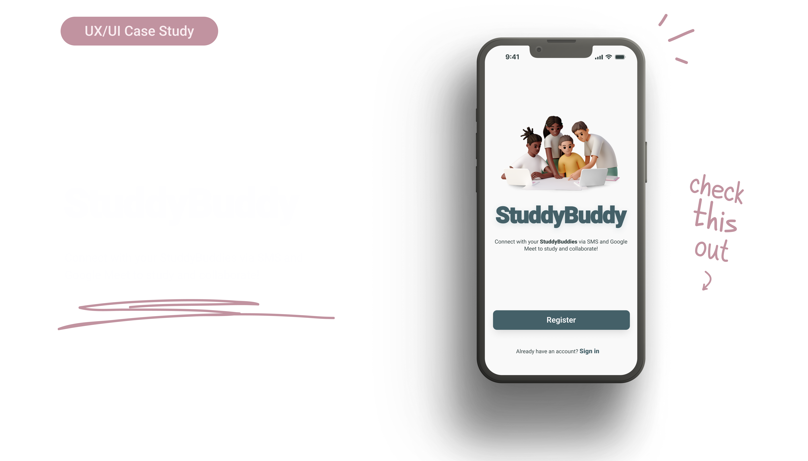

StuddyBuddy
Connect with your StuddyBuddies via SMS and Google Meet to study and collaborate!
Project Overview
StuddyBuddy is a mobile productivity app targeting 16-24-year-old students. The app will provide a platform for students to enhance their productivity by organizing their tasks and tracking their progress. The key functionalities of the app will include creating a user profile, creating task lists, and marking tasks as complete. The app will be designed to be user-friendly, visually appealing, and accessible on both iOS and Android platforms.
Problem Statement
Many students in the 16-24 age group struggle with managing their tasks and staying organized, leading to decreased productivity and increased stress levels. There is a need for a mobile app specifically designed to cater to the unique requirements and preferences of students in this age range. Existing productivity apps often lack intuitive interfaces and fail to engage this demographic effectively. Therefore, there is a demand for a user-friendly, feature-rich mobile app that can help students in this age group stay organized and accomplish their tasks efficiently.
Solution
The StuddyBuddy app will provide students in the 16-24 age range with a comprehensive platform to manage their tasks, improve their productivity, and reduce stress levels. By combining user-friendly design, key functionalities, and personalized features, the app aims to become an indispensable tool for student productivity and organization. Sky blue and lilac colors are known to calm the nerves and help you relax. While study is stressful, this app aims to alleviate the stress factor and allow users to not only enjoy entering their details but also collaborate with their StuddyBuddies.
Features
The proposed solution is to develop a mobile productivity app that offers a range of features to support students in managing their tasks effectively. The app will be designed with a clean and modern interface, appealing to the target demographic. The key functionalities of the app will include:
Design Process
The design process for StuddyBuddy involves thorough research to understand the target audience's needs and preferences. User flows and core functionalities are defined based on the research findings, followed by the creation of low-fidelity wireframes and intuitive information architecture. The visual design is then developed, aligning with the youthful user base. Interactive prototypes are built and tested with representative users to gather feedback and refine the design. Collaboration with developers ensures a smooth transition from design to a functional app. Continuous iteration based on user feedback and market trends is performed to enhance usability and incorporate new features.
Competitor Research
By conducting thorough competitor research on MyStudyLife and EGENDA, I obtained valuable insights into their strengths, weaknesses, and user perceptions. This information helped me identify opportunities to differentiate StuddyBuddy, and provide a more compelling user experience for the target audience.
Developing Ideas
Low-fidelity wireframes were used to outline the app's structure and user interface. The initial phase of the design process required significant input to allow for designs that reflect the information architecture, and to ensure intuitive navigation and seamless user experience. Particular consideration was given to the placement of key features, and priority was given to accessibility and usability.